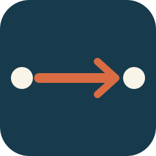
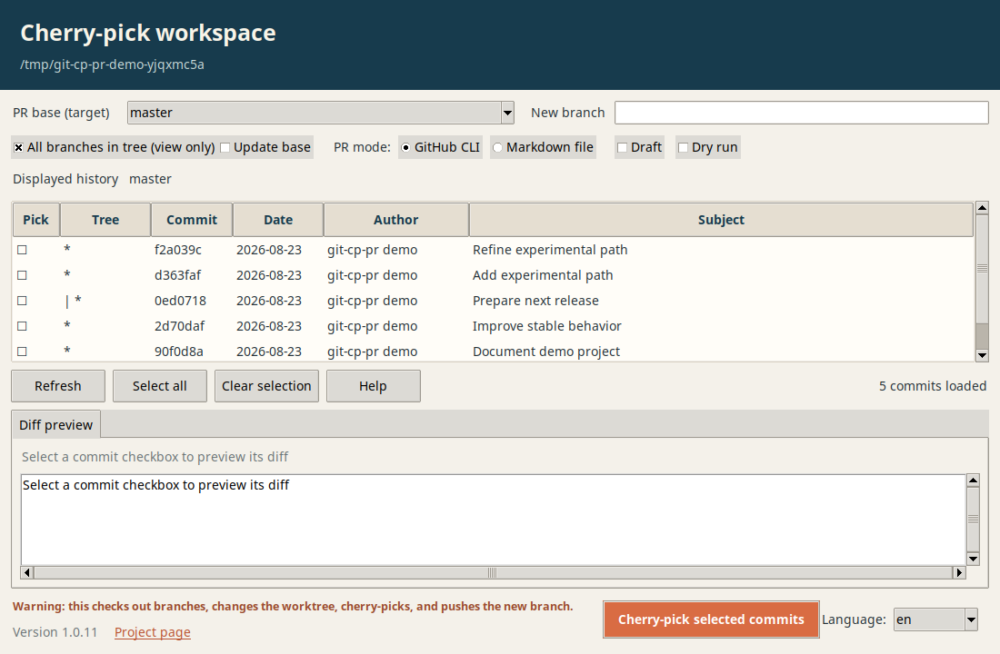

Select commits
Pass individual commits or ranges. Commit messages become a structured PR title and body, with trailers consolidated cleanly.
git cp-pr A..B

git-cp-prCommand-line and GUI utility · version 1.0.10
A command-line and desktop tool for selecting commits, creating a temporary branch, and preparing a pull request.
Workflow
The tool prepares a separate cherry-pick branch from selected commits, then either creates a pull request or writes its details to Markdown.
Use it when your development branch contains many local commits but you need to send only one or more specific changes upstream. For example, a bug fix discovered during development can be selected from the same branch, cherry-picked onto a clean temporary branch, and submitted as a specific pull request without including unrelated work.
Pass individual commits or ranges. Commit messages become a structured PR title and body, with trailers consolidated cleanly.
git cp-pr A..B
Create through GitHub CLI, write a Markdown brief, make it a draft, or open your editor before submission.
--draft --editor
Dry-run applies the commits locally, leaves the branch available, and skips both the remote push and PR creation.
--dry-run
Desktop interface
The Tkinter GUI runs from the repository you launch it in. Browse the current branch by default, expand to local and remote branches when needed, and select commits one by one.

Installation
Choose a direct Git installation or install from a local clone.
python3 -m pip install --user pipx
python3 -m pipx ensurepath
pipx install git+https://github.com/jplcz/git-cp-pr.gitpy -m pip install --user pipx
py -m pipx ensurepath
pipx install git+https://github.com/jplcz/git-cp-pr.gitgit clone https://github.com/jplcz/git-cp-pr.git && cd git-cp-pr
python3 -m pip install --user pipx
python3 -m pipx ensurepath
pipx install .py -m pip install --user pipx
py -m pipx ensurepath
pipx install .cd your-repository && git cp-pr --dry-run abc1234